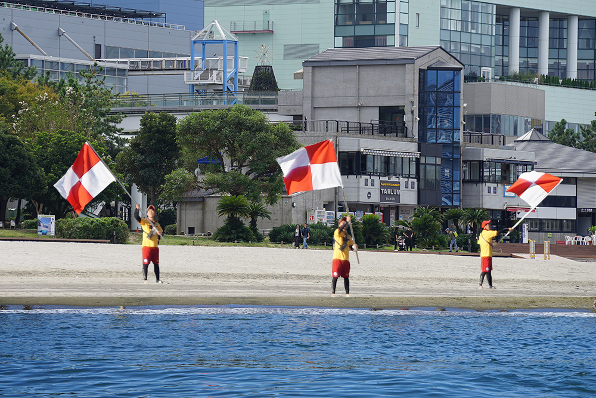
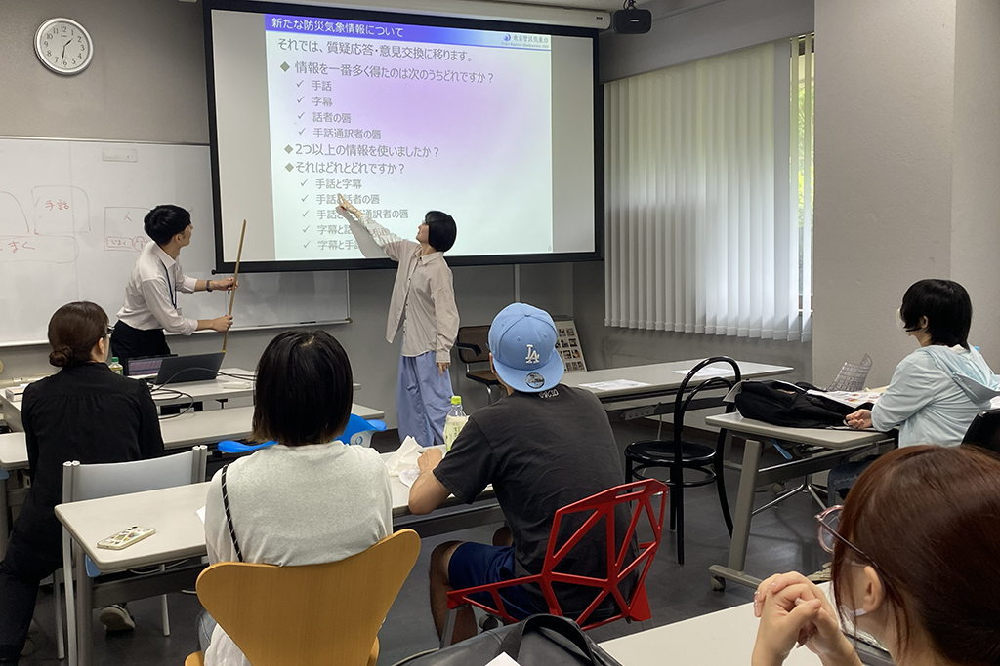

津波警報を、聴覚障害者にも届く「見える」情報に。

取り組みの概要
気象庁による「津波フラッグ」制定への協力と、要配慮者対策についての意見交換。
津波注意報・警報および大津波警報が発表された際には、海水浴場を利用している聴覚障害者に対して、その情報を視覚的に伝達する手段が必要です。そのため気象庁は「津波警報等の視覚による伝達のあり方検討会」を設置し、本学もこれに協力して、その伝達方法に関する検討が進められました。
当検討会において本学は、旗の候補案の提案や選定、気象庁が実施した海水浴場における旗による伝達の有効性検証への参加、旗の掲揚画像を用いた聴覚障害者および色覚特性のある人を対象としたアンケート調査などの協力を行い、「津波フラッグ」の制定に大きく貢献しました。
- 連携先
- 気象庁
- 期間
- 2019年10月〜（継続中）
- 関わった学生の領域
- 総合デザイン学科
- 主体教員
- 井上 征矢 教授
- 学生の関わり方
- 授業「視覚伝達デザイン論・演習C」（3年生）として
学生の学びと関わり
学生の学び
多様な人々の視点に立って検討する、災害時の情報保障やユニバーサルデザインと、社会実装を前提とした検討プロセス。
学生の役目
旗のデザイン案の提案と選定、海水浴場で行われた有効性検証への参加、色覚特性のある人からの見え方の検討、など。
求められた専門性
案内表示に関する知識（安全色、案内用図記号、色の機能性）や、色覚特性に関する知識等。
連携先にとっての価値
デザインを専門とする障害当事者からの、津波警報等を視覚的に伝える手段の提案と検証。当事者の視点を設計の起点に据えることで、より実効性の高い情報伝達のあり方を検討できました。
成果
- 「津波フラッグ」の制定
- 全国の海水浴場へ普及
その後も気象庁との連携は継続しており、災害時に求められる情報やその伝達方法などについての意見交換を定期的に実施しています。

連携先担当者の評価
※ コメントは掲載準備中です。 気象庁 ご担当者